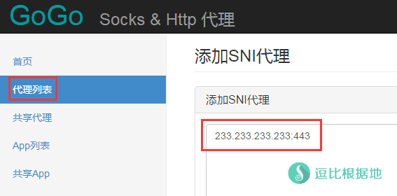
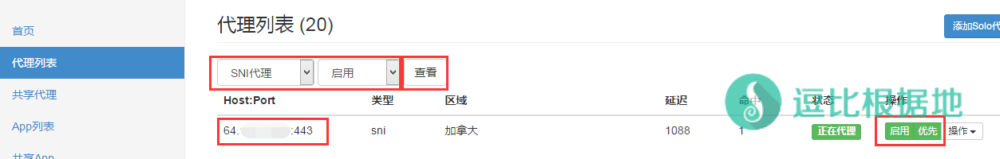

现在有很多可以 科学上网的DNS和Hosts，那么他们是如何实现的呢？一些人可能觉得是，找到谷歌等网站没有被墙的IP，但是实际上经过几年的封杀，谷歌等网站的可用IP现在非常有限，通过这种方式效率低而且麻烦。
所以那些可以 科学上网的DNS和hosts，都是使用的自建或者公共SNI代理。
原理简单说明
SNI详细的我也不懂，假如你有一台 海外的服务器 IP为： 233.233.233.233 ，上面搭建了 SNI Proxy，并且配置正常并启动。
然后你本地Hosts文件在最后添加一条：
233.233.233.233 www.google.com
保存Hosts文件并打开浏览器访问 https://www.google.com ，然后你就会发现你可以进入 https://www.google.com 网站了。
原理解析：
Hosts设置233.233.233.233 www.google.com后，浏览器访问https://www.google.com=>> 浏览器搜索Hosts文件发现设置的解析IP(233.233.233.233) =>> 浏览器访问 SNI Proxy(233.233.233.233) =>> SNI Proxy收到信息然后去访问https://www.google.com并获取网站数据，然后把网站数据原封不动的返回给你 =>> 浏览器收到 SNI Proxy返回的 网站数据并显示出来 =>> 你看到了https://www.google.com网页
简单的来说，SNI Proxy 会把请求的网站比如 https://www.google.com 获取并原封不动的返回请求者，不需要对证书进行解密和加密，所以不需要配置证书。
SNI Proxy 可以简单的实现这样的 反向代理功能。
安装环境
本教程只适用于 Ubuntu 14.04 + 以上版本的系统。
Debian 7 / 8 的安装方法请看这个：Debian 编译安装 SNI Proxy 反向代理教程（可用于Hosts/DNS服务器）
安装步骤
apt-get install python-software-properties software-properties-common -y add-apt-repository ppa:dlundquist/sniproxy
第二行代码执行后提示大概如下：
[email protected]:~# add-apt-repository ppa:dlundquist/sniproxy More info: https://launchpad.net/~dlundquist/+archive/ubuntu/sniproxy Press [ENTER] to continue or ctrl-c to cancel adding it gpg: keyring `/tmp/tmpnr3gi1cx/secring.gpg' created gpg: keyring `/tmp/tmpnr3gi1cx/pubring.gpg' created gpg: requesting key ED122FA0 from hkp server keyserver.ubuntu.com gpg: /tmp/tmpnr3gi1cx/trustdb.gpg: trustdb created gpg: key ED122FA0: public key "Launchpad PPA for Dustin Lundquist" imported gpg: Total number processed: 1 gpg: imported: 1 (RSA: 1) OK
继续安装
apt-get update && apt-get install sniproxy -y
配置说明
SNI Proxy的默认配置文件：/etc/sniproxy.conf
vim的具体使用教程：Linux中VIM编辑器的真 · 简单使用教程
我们可以使用 VIM 等编辑器添加修改，也可以直接用 echo写入文件。
VIM操作简单说明（可选）：
echo "" > /etc/sniproxy.conf # 清空配置文件 vi /etc/sniproxy.conf # 打开配置文件
然后按 I 键 进入编辑模式，复制下面的内容到配置文件中（手动把 echo -e "和 " > /etc/sniproxy.conf 去掉），然后按 Esc 键 推出编辑模式，然后输入 :wq 保存并退出vi。
下面是 echo 方式直接写入配置文件。
泛反向代理：
泛反向代理，指的是所有请求 SNI Proxy 的域名都会反向代理。
echo -e "user daemon
pidfile /var/run/sniproxy.pid
listen 443 {
proto tls
table https_hosts
access_log {
filename /var/log/sniproxy/https_access.log
priority notice
}
}
table https_hosts {
.* *:443
}" > /etc/sniproxy.conf
自定义反向代理：
自定义反向代理，指的是自己指定域名，只有通过这些域名请求 SNI Proxy 的才会反向代理。
比如只设置了 (.*.|)google.com$ * ，那么你只能通过 www.google.com、google.com 和其他以 google.com 为主的二级 三级域名 访问SNI Proxy并请求反向代理。其他没有设置的域名都会忽略。
要反向代理什么域名就在 table https_hosts {} 中添加规则，例如 我要反向代理 任何以 google.com 为主的二级 三级域名 ，那么就写：
(.*.|)google.com$ *
这样只要是以 google.com 为主的域名都会被反向代理，比如 www.google.com news.google.com mail.google.com 都会反向代理。
echo -e "user daemon
pidfile /var/run/sniproxy.pid
listen 443 {
proto tls
table https_hosts
access_log {
filename /var/log/sniproxy/https_access.log
priority notice
}
}
table https_hosts {
.* *:443
}
table https_hosts {
(.*.|)google.com$ *
(.*.|)google.com.hk$ *
(.*.|)googlemail.com$ *
(.*.|)googlecode.com$ *
(.*.|)blogspot.com$ *
(.*.|)gmail.com$ *
(.*.|)youtube.com$ *
}" > /etc/sniproxy.conf
使用说明
使用命令
service sniproxy start # 如果运行无反应并没有启动，那么请直接使用 sniproxy 来启动试试 # 启动SNI Proxy service sniproxy stop # 停止SNI Proxy service sniproxy restart # 重启SNI Proxy service sniproxy status # 查看状态
启动SNI Proxy后，查看一下 网络连接端口监听情况：
netstat -lntp
当出现大概如下所示的信息时，代表正常启动并监听端口443，注意最后的sniproxy。
[email protected]:~# netstat -lntp Active Internet connections (only servers) Proto Recv-Q Send-Q Local Address Foreign Address State PID/Program name tcp6 0 0 :::443 :::* LISTEN 11673/sniproxy
如果没有发现 sniproxy 的监听端口信息，那么看一下是否有其他的 软件/服务 占用了 443 端口，如果有的话请关闭后再尝试启动 SNI Proxy。
如果没有异常情况，那么我们就可以使用 SNI Proxy 代理了。
运行优化说明
建议在运行 SNIProxy前，执行一下这个命令，作用是提高系统的文件符同时打开数量，对于TCP连接过多的时候系统默认的 1024 就会成为速度瓶颈。
ulimit -n 51200
这个命令只有临时有效，重启后失效，如果想要永久有效，请执行：
echo "* soft nofile 51200 * hard nofile 51200" >> /etc/security/limits.conf
然后最后再执行一下 ulimit -n 51200 即可。
Hosts
找到你电脑的Hosts文件，并打开（注意Hosts可能是隐藏文件，需要设置显示出来，还有win10修改Hosts文件需要管理员权限）。
Windows xp / 7 / 10 系统Hosts位置：C:\windows\system32\drivers\etc\hosts
在最后一行添加你要反向代理的网站，比如 www.google.com
233.233.233.233 www.google.com
其他想要反向代理的域名按这个格式添加(233.233.233.233是你的SNI Proxy服务器IP)，当然Hosts设置比较麻烦，而且比如 youtube.com 看视频的话要设置很多 Hosts域名，很麻烦，所以如果只是访问谷歌，那么可以使用这个Hosts方法。
DNS
如果你有一台国内服务器的话，你可以搭建一个DNS服务器，然后把谷歌等域名的解析IP都指向你的SNI Proxy服务器，然后当你使用这个DNS的时候，就会解析到SNI Proxy服务器并反向代理去访问谷歌等网站。
- 『原创』快速自建DNS服务器以 科学上网+屏蔽广告 —— dowsDNS 一键脚本
- Linux 使用 dowsDNS 快速自建DNS服务器以 科学上网+屏蔽广告
- Linux 自建DNS 并使用SNI Proxy实现科学上网 —— DNSmasq配置教程
但是搭建DNS服务器，必须有国内服务器，否则会被墙DNS污染，所以没有国内服务器的可以看看下面这几个可以科学上网的DNS。
Xsico DNS
官方网站 – 科学上网
Public Dns：115.159.157.26
Scholar Dns：115.159.158.38
Mogu DNS
官方网站 – 科学上网+广告过滤
北方推荐：122.114.245.45
南方推荐：115.159.96.69
Pure DNS
官方网站 – 科学上网+广告过滤
北方推荐：123.207.137.88
南方推荐：115.159.220.214
GoGo
GoGo新版本也是支持 SNI Proxy 代理的，所以可以添加自己的 SNI Proxy 代理来使用。
GoGo添加SNI Proxy代理很简单，首先进入管理面板-代理列表：http://127.0.0.1:9092/proxies
然后点击右上角的 添加SNI代理 按钮，然后出现下图，按下图格式添加，比如你的SNI Proxy代理服务器IP为 233.233.233.233 ，那么就填写 233.233.233.233:443 ，然后点击下面的 确认添加 按钮就行了。

添加完毕后，你可以在 代理列表的筛选中，选择 SNI代理 - 启用 ，然后点击 查看 按钮，筛选出刚才SNI代理。
然后找到我们刚才添加的 SNI代理，并设置 优先（否则可能不会使用这个代理）。
这就算添加完毕了，GoGo客户端使用教程：一个免费且快速的HTTP/SOCKS5代理软件 —— GoGotunnel

dowsDNS
打开配置文件 config.json 找到 "sni_proxy_ip":"219.76.4.3" 参数，把IP改为你自己搭建的 SNI Proxy IP即可。
转载请超链接注明：逗比根据地 » 一个 反代无需证书 适用于DNS/Hosts的小工具 —— SNI Proxy代理 安装教程
责任声明：本站一切资源仅用作交流学习，请勿用作商业或违法行为！如造成任何后果，本站概不负责！


pidfile 代码是指定一个 PID文件地址，当软件启动时，会创建PID文件并写入进程PID，等软件关闭时，会删除PID文件，PID文件是软件自身用来判断进程是否运行的，不写这个代码，软件也会有个默认PID文件参数。
我的测试系统是 Ubuntu14.04 x64 。
一般一些网站的下载文件都是CDN域名，和网站本身的域名是分开的，就像Github和Youtube视频。
SNI的特性是不需要网站对应的SSL证书就可以反向代理网站，就是因为他是直接把网站数据整体转发给你，SNI代理服务器没有SSL证书的密匙，无法解密SSL证书的，只是一个单纯的数据转发工具。
但是这个工具是开源的，意味着可能会被修改来劫持用户数据等。
公共代理均存在风险，自己要有安全意识。